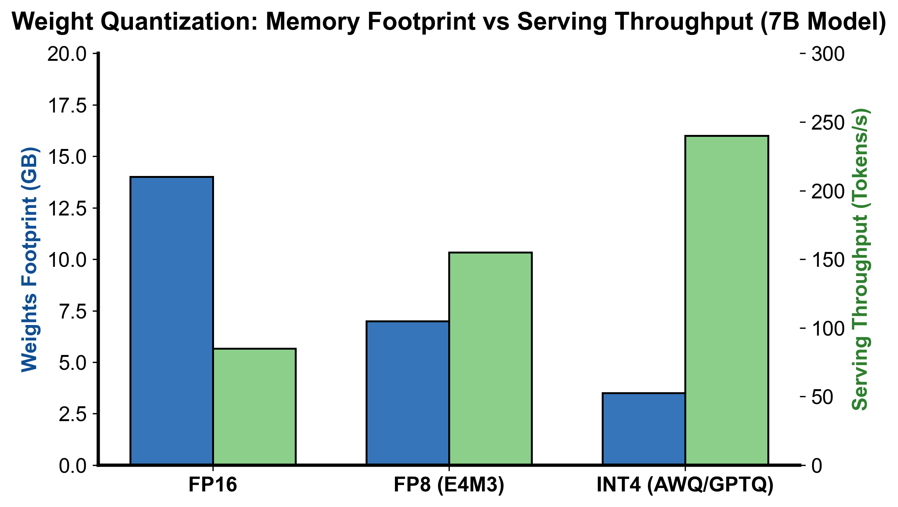

flowchart TD
Act["输入激活 X (FP16/BF16)"] --> DynamicQuant["动态在线量化: X_quant = round(X / scale)"]
Weight["低比特权重 W_quant (离线预量化)"] --> WeightLoad["从显存高效拉取压缩数据 (带宽翻倍)"]
DynamicQuant & WeightLoad --> TensorCore["Tensor Core 硬件执行低精度点积 (INT4/FP8 GEMM)"]
TensorCore --> ScaleMul["反量化乘缩放因子: Out = TensorCore * (scale_x * scale_w)"]
ScaleMul --> Out["高精度写回 (FP16/BF16)"]
第 6 课：量化源码走读：INT4、FP8、NVFP4、MXFP4 与 KV Cache
参考答案版：包含完整代码实现与问答题深度参考解析。建议先独立完成练习题后再展开核对。
本课目标与通过标准
本课产出：能从 vLLM/SGLang quantization registry 追到 QuantizationConfig、layer method 与 kernel，并根据硬件、瓶颈和质量证据选择 W4A16、W8A8/FP8、FP4 或 KV 量化。
通过要求：唯一代码填空题通过全部断言；Q1～Q3 都能沿源码对象给出因果链；能指出一个正确性不变量、一个性能边界和一个需要 benchmark 才能确认的结论；总分至少 8/10。
源码版本与阅读方法
本课程使用固定 commit 的永久链接保证行号可复现，同时链接 current docs 供核对最新变化。阅读时先画调用图和状态所有权，再进入分支；不要从大文件第一行机械顺读。
源码阅读顺序：
- vLLM
model_executor/layers/quantization/__init__.py：QuantizationMethods与get_quantization_config。 - vLLM
base_config.py：QuantizationConfig.get_quant_method与QuantizeMethodBase.create_weights/apply。 - vLLM
compressed_tensors/schemes/：按 W4A16、W8A8 FP8、NVFP4、MXFP4 比较 scheme，不要只看文件名。 - SGLang
layers/quantization/__init__.py：平台条件下的 registry、CPU/外部平台 override。 - SGLang
fp8.py、mxfp4.py、nvfp4_online.py、kv_cache.py：追 checkpoint metadata 到实际 op。
源码快照：vLLM 8e958902eee5；SGLang 9deb6952afa4。
核心概念与运行机制
核心操作与执行流程图解

图 6-1：FP16 vs FP8 vs INT4 显存占用与推理吞吐权衡对比（基于 scientific-figure-making 绘制）
图 6-2：量化 GEMM 在线标定、Tensor Core 计算与反量化流水线
1. 它是什么，解决什么问题
在当代超大规模语言模型（LLM）的工业化部署中，全精度（FP16/BF16）模型面临着严峻的物理制约： 1. 显存容量瓶颈（VRAM Capacity Wall）：一个 70B 参数的 BF16 模型仅权重就需要占据约 140 GB 显存，至少需要两张 80GB GPU 才能勉强加载，留给 KV Cache 和高并发并发批处理（Batch Size）的显存空间极其逼仄； 2. 访存带宽瓶颈（Memory Bandwidth Wall）：在自回归 Decode 阶段，计算强度（FLOPs/Byte）极低，GPU 绝大部分时间都在等待从 HBM 中读取庞大的模型权重与长序列 KV Cache。
模型量化（Model Quantization）通过将高精度浮点数映射到低比特离散数值空间（如 INT8、INT4、FP8、NVFP4、MXFP4），实现显存占用大幅缩减与访存/计算吞吐的数倍跃升。如图 6-1 所示，从 FP16 到 FP8 再到 INT4，模型显存占用可降低 50%~75%，为 KV Cache 腾出巨大的并发容量，同时推动系统吞吐成倍增长。
在现代高性能推理引擎（vLLM 与 SGLang）中，量化不仅仅是一套数学离散化算法，更是一套横跨 权重存储打包（Packing）、运行时配置注册（Registry）、动态在线标定（Calibration）与 GPU 底层硬件算子分发（Kernel Dispatch） 的完整系统工程。
2. 它如何工作
工业级推理引擎中的量化执行流水线具有严密的分层架构（如图 6-2 所示）：
- 量化范式与精度矩阵：
- W4A16（权重量化，激活保持高精度）：如 AWQ、GPTQ、Marlin。仅将静态权重压缩为 INT4 存放于 HBM，在 GEMM 算子内部流式反量化回 FP16/BF16 进行计算。核心收益是节省 75% 的权重显存带宽与容量，极度契合单请求或小 Batch 的 Decode 场景。
- W8A8 / FP8（权重与激活双量化）：利用现代 GPU（NVIDIA Ada/Hopper/Blackwell）原生的 FP8 Tensor Core（E4M3 用于前向计算，E5M2 用于梯度或长动态范围），在输入激活进入 GEMM 前执行动态在线量化： \[\tilde{X} = \text{clip}\left(\text{round}\left(\frac{X}{s_x}\right), -q_{\max}, q_{\max}\right)\] Tensor Core 直接执行原生的 8-bit 点积累加，吞吐比 FP16 翻倍。
- NVFP4 / MXFP4（Micro-scaling 微缩放 4-bit 范式）：传统 Per-Tensor 或 Per-Channel 量化在 4-bit 下极易因激活异常值（Outliers）导致全盘精度崩溃。NVFP4 与 OCP MXFP4 引入细粒度微块缩放（Micro-block Scaling，如每 16 或 32 个元素共享一个独立的 E2M1 浮点缩放因子），有效将 Outlier 限制在局部微块内，并在 Blackwell 原生 FP4 Tensor Core 上实现近乎 4 倍的计算吞吐。
- KV Cache 量化：独立于模型权重量化，针对长上下文场景将 Paged KV Cache 压缩为 FP8 或 INT4 格式，使单卡支持的上下文长度与最大并发量激增数倍。
- 源码分层架构与生命周期：
- Registry 注册分发：引擎启动时解析
--quantization命令行参数与模型config.json，在QuantizationRegistry中匹配对应的QuantizationConfig实现类； - 层级注入与权重打包：模型初始化时，
QuantizeMethodBase拦截模型的Linear或MoE算子，调用create_weights创建低精度 Packed 参数（如将 8 个 INT4 紧凑打包为一个int32）与对应的 Scale/Zero-Point 张量； - 权重重排（Layout Transformation）：针对硬件 Tensor Core 的特定内存访问模式（如 Marlin 算子的 Interleaved 权重交织排列），在
process_weights_after_loading中完成离线内存布局转换； - 前向执行与算子分发：运行时
apply方法根据当前的 Batch 尺寸、序列长度与底层硬件 Capability，动态选择最优执行内核（如小 Batch 选择访存优化的 Marlin 内核，大 Batch 选择计算密集的 CUTLASS FP8 内核）。
- Registry 注册分发：引擎启动时解析
3. 正确性条件与常见误区
- 数值范围溢出与不对称 Zero-Point 不变量：
- 在对称量化（Symmetric Quantization）中，量化网格严格关于 0 对称：\(X_q = \text{round}(X / s)\)。若输入激活存在显著的单向分布偏移（如全部大于 0），对称量化会白白浪费一半的离散表达区间；
- 若采用非对称量化（Asymmetric Quantization），必须维护零点偏移量 \(z\)：\(X_q = \text{round}(X / s) + z\)。此时矩阵乘计算必须补偿与零点相关的交叉项，若反量化融合算子遗漏该交叉项，将引发致命的数值偏置与累积误差。
- 微块缩放（Micro-Scaling）的内存对齐与布局约束：
- NVFP4 / MXFP4 的微块大小（如 16 或 32）要求矩阵的 \(K\) 维度和 \(N\) 维度必须是微块尺寸的整数倍。若模型存在非对齐的隐藏层维度（如某些特殊 Vocab Size 或 SwiGLU 中间层），必须执行 Padding 填充或特殊边界处理，否则将导致非法显存越界访问。
- “显存占用直接除以量化比率”的伪常识：
- 常见误区：误以为将 16-bit 模型量化为 4-bit，整机显存消耗就必定降为原来的 \(1/4\)。
- 实际情况：显存账本不仅包含模型权重，还包含庞大的 KV Cache 显存池、CUDA Graphs 预捕获显存空间、激活工作区（Workspace）、未量化的 Embedding/LM-Head 浮点张量、以及量化引入的额外 Scale/Zero-Point 元数据张量。
4. 性能与工程取舍
- W4A16 vs. W8A8 (FP8) 的适用边界：
- W4A16 适合小 Batch（并发数 \(\le 8\)）的自回归 Decode。此时系统处于严重的访存带宽瓶颈，减小权重体积即可线性降低权重拉取时间；但由于激活仍为高精度，Tensor Core 无法启用低精度计算单元，在大 Batch Prefill 下无法提供算力加速。
- W8A8 (FP8) 适合大 Batch 吞吐优先或长 Prompt 的 Prefill 场景。此时系统进入计算受限（Compute-Bound）区间，FP8 Tensor Core 提供的 2 倍峰值算力可显著压缩 TTFT，但在极小 Batch 下由于权重体积大于 INT4，访存延迟反而略逊于 W4A16。
- 动态量化（Dynamic Quant） vs. 静态标定（Static Quant）：
- 动态在线量化每次前向实时计算激活张量的最大绝对值并推导 Scale，精度极高且无需离线校准集；但代价是引入了规约（Reduction）Kernel 的额外执行时延与显存同步。
- 静态标定使用离线数据集提前计算固定的 Scale，运行时零额外计算开销；但在遭遇分布外（OOD）提示词或极端 Outliers 时极易产生严重截断误差。
具体演示
设输入激活微块为包含 4 个元素的向量：\(X = [0.0, 1.0, -2.0, 8.0]\)，采用对称量化映射到 3-bit 有符号整数空间 \([-q_{\max}, q_{\max}]\)，其中 \(q_{\max} = 7\)： 1. 计算绝对值最大值：\(\max(|X|) = \max([0.0, 1.0, 2.0, 8.0]) = 8.0\)； 2. 计算缩放因子：\(s = \frac{\max(|X|)}{q_{\max}} = \frac{8.0}{7} \approx 1.142857\)； 3. 执行整型量化与截断： \[q_0 = \text{round}(0.0 / s) = 0\] \[q_1 = \text{round}(1.0 / (8/7)) = \text{round}(0.875) = 1\] \[q_2 = \text{round}(-2.0 / (8/7)) = \text{round}(-1.75) = -2\] \[q_3 = \text{round}(8.0 / (8/7)) = 7\] 量化整型向量为 \(Q = [0, 1, -2, 7]\)； 4. 反量化还原： \[\hat{X} = Q \times s = [0 \times \frac{8}{7}, 1 \times \frac{8}{7}, -2 \times \frac{8}{7}, 7 \times \frac{8}{7}] = [0.0, 1.143, -2.286, 8.0]\] 最大值 \(8.0\) 得到精确无损表达，局部较小数值产生微小的舍入误差。若采用更细粒度的 2 元素微块，误差将被进一步局限和稀释。
实践任务：唯一代码填空题
补齐对称 micro-block fake quantization。它用于理解 scale 粒度，不冒充 NVFP4/MXFP4 的完整格式实现。
只能修改 TODO/______ 位置，不得删除断言或放宽通过条件。
Code
def blockwise_symmetric_fake_quant(values, block_size, qmax):
if block_size <= 0 or qmax <= 0:
raise ValueError("invalid quantization geometry")
restored, scales = [], []
for start in range(0, len(values), block_size):
block = values[start:start + block_size]
max_abs = max((abs(x) for x in block), default=0.0)
# TODO：零 block 使用 scale=1；其他 block 映射到 [-qmax,qmax]。
scale = ______
scales.append(scale)
for value in block:
q = ______
restored.append(q * scale)
return restored, scales
restored, scales = blockwise_symmetric_fake_quant([0.0, 1.0, -2.0, 8.0], 2, 7)
assert scales == [1/7, 8/7]
assert abs(restored[1] - 1.0) < 1e-12
assert abs(restored[-1] - 8.0) < 1e-12
assert blockwise_symmetric_fake_quant([0.0, 0.0], 2, 7) == ([0.0, 0.0], [1.0])检查方法
运行断言；把 block size 改为 4，比较数值误差和 scale 数。说明该模型遗漏了真实 FP4 的哪些编码细节。
Q1
从 --quantization 到实际 GEMM kernel，中间至少经过哪些源码层？
你的答案：
Q2
为什么不能笼统地说“NVFP4 比 INT4 先进，所以一定更好”？
你的答案：
Q3
模型量化后权重显存减半，但最大并发只提升 10%，应如何做账和定位？
你的答案：
评分规则
- 代码 4 分：主路径 2 分、边界条件 1 分、能映射回源码对象 1 分；
- Q1～Q3 各 2 分：必须包含对象、状态变化、正确性或成本链；
- 一票否决：把论文峰值写成普遍生产结论；把源码支持写成所有模型/硬件可用；混淆算法正确性与性能；只背类名而说不清状态所有权。